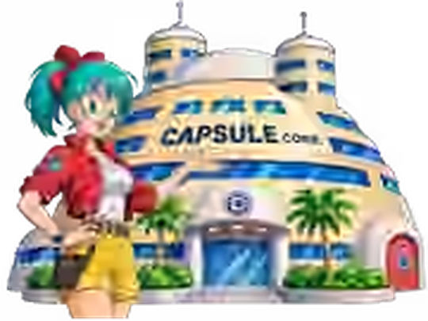
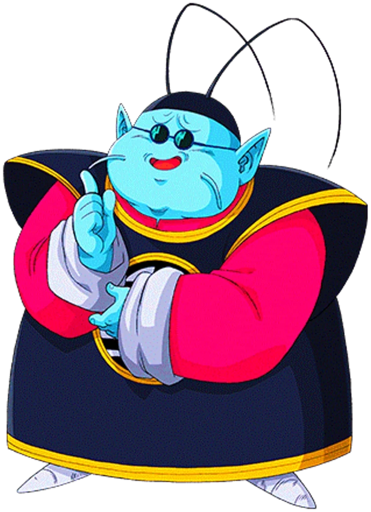

¡Llegaste! ¡Te estaba esperando al final del Camino de la Serpiente!
Elegí la distancia y empezá a correr en vista corredor.
Las cuatro rutas usan las ilustraciones que creamos. Al elegir, arrancás en vista corredor.